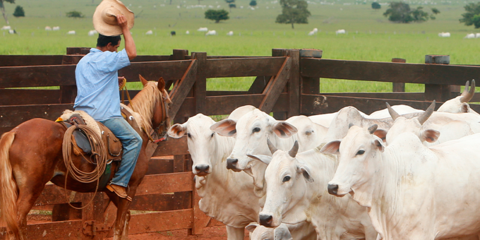
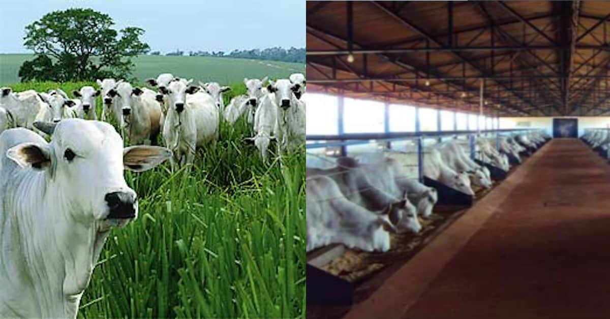
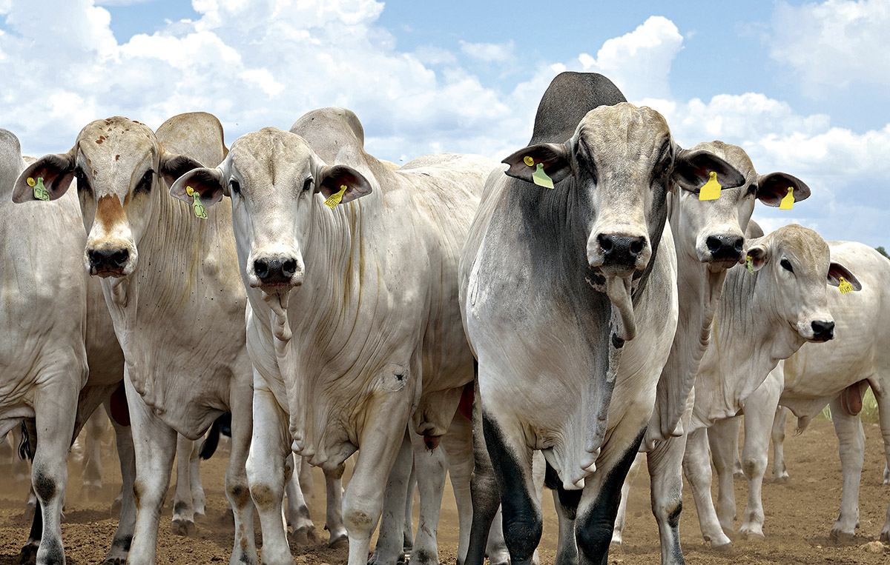
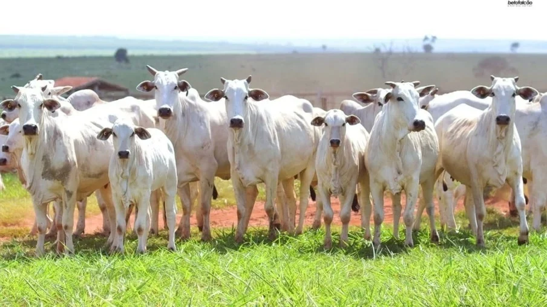
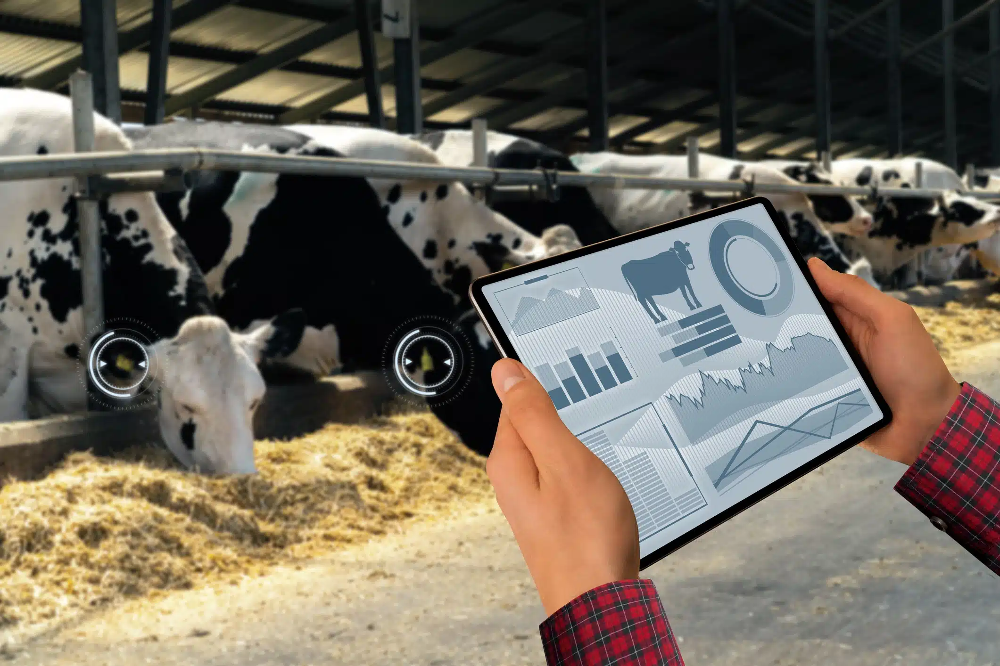

Adoção de tecnologias na pecuária brasileira proporcionou a modernização do setor com incremento da produção e da produtividade, em bases sustentáveis. Nos últimos 40 anos, a produção de carne de aves aumentou 22 vezes; a de carne suína, 4 vezes; a de leite, 4 vezes; e a produção de carne bovina, 4 vezes. Pesquisas em genética, avanços no controle de pragas e doenças e melhoria das pastagens aumentaram de 11% para 22% a média de desfrute dos rebanhos bovinos de corte. Cinco cultivares de forrageiras da Embrapa são responsáveis por quase 80% do mercado nacional e levaram o Brasil a se tornar o maior exportador de sementes forrageiras tropicais do mundo. Com o suíno light, a pesquisa contribuiu para o desenvolvimento de animais com menor percentual de gordura que hoje representam o padrão do rebanho nacional. A produção anual de leite duplicou nos últimos 20 anos e o aumento não ocorreu só com a expansão do rebanho, mas também com a produtividade das vacas, a partir da incorporação de tecnologias.
Na atualidade, os trabalhadores conhecidos como "peões", "vaqueiros", "campinos", entre outros, são aqueles que realizarem trabalhos com gado bovino e /ou bubalino criados primariamente para serem usados como fontes de carne. Carne (bovina, bubalina, de aves etc), ovos, leite e mel são os principais produtos alimentares oriundos da atividade pecuária. Couro, lã e seda são exemplos de fibras usadas na indústria de vestimentas e calçados. O couro também é extensivamente usado na indústria de mobiliário e de automóveis.
consiste na criação do gado a pasto em grandes áreas, ocupando latifúndios e propriedades familiares. De modo geral, não há tantos investimentos quanto na pecuária intensiva.
Agropecuária intensiva é o sistema agrícola que usa de forma intensiva a terra ou o confinamento animal para produzir em larga escala. A agricultura intensiva exige uma grande quantidade de combustível e de insumos porque não proporciona uma rotação de culturas de plantio.
A pecuária de corte é a atividade destinada à criação de animais com o objetivo de produzir carne para o consumo humano. No Brasil, a atividade está muito associada a criação de bovinos, pela sua magnitude e expansão territorial, ainda que também tenha expressividade com a produção de aves, suínos e outros.
O mercado físico do boi gordo voltou a apresentar preços mais fracos nas principais praças de produção e comercialização do país. O cenário segue propício para a indústria frigorífica testar patamares mais baixos de preço, com grande quantidade de animais ofertados, somado a confortável posição das escalas de abate, que a nível de Brasil excede os dez dias úteis.
O olho do dono é o que engorda o gado, é o que diz o famoso ditado. Mas, será que só o acompanhamento do proprietário é suficiente para ter maior precisão no manejo dos animais? Ou, e quando o dono não está presente na propriedade, como fica o gado?
Atualmente, existem diversas soluções que auxiliam o pecuarista e facilitam a tomada de decisões, reduzindo o trabalho e os custos. Além disso, com o uso de ferramentas para o controle do gado e das variáveis que impactam na produção, o produtor consegue:
. Automatizar processos;
. Ampliar a eficiência do uso de insumos;
. Diminuir o esforço e aumentar a eficiência do trabalho;
. Aumentar a qualidade dos produtos agropecuários, por meio da melhora da qualidade e enriquecimento da carne e leite produzidos;
. Reduzir as perdas quanto ao manejo do gado;
. Melhorar as condições de vida do trabalhador rural;
. Otimizar a produtividade.
Muitos criticam, mas não vivem sem, somos chamados de fascistas e direitista, mas não vivem sem
Se o agro não colhe hoje ninguém come amanhã!!!
Avante pecuária brasileira